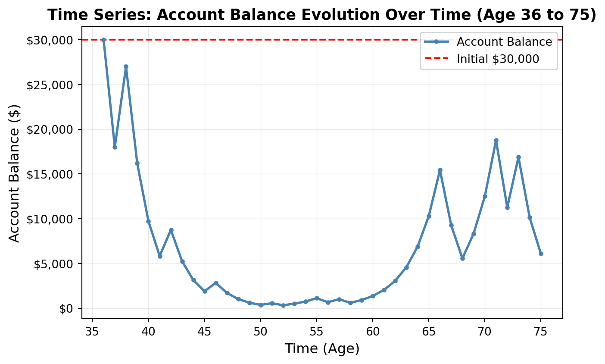
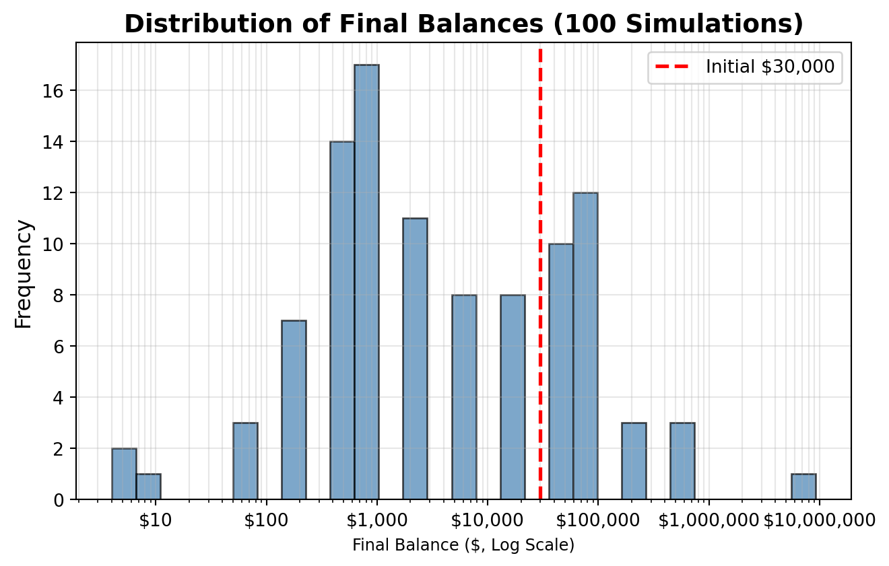
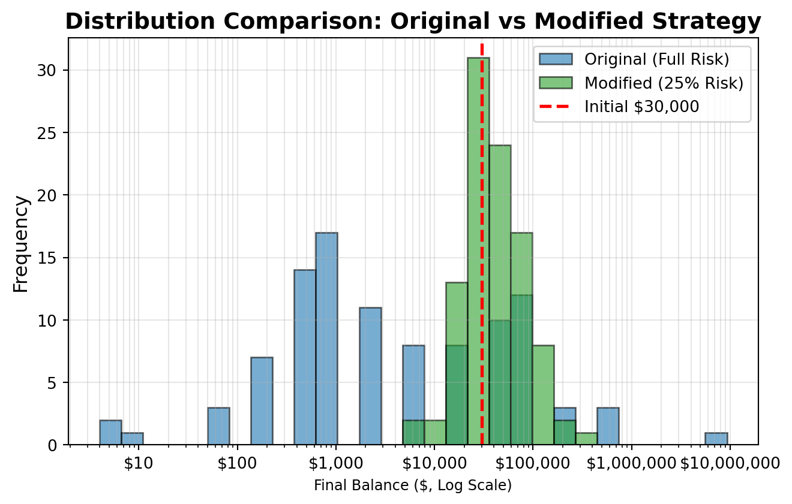

Simulation Challenge
Starter Template with To-Dos
üé≤ Simulation Challenge - Starter Template
Importantüìã What You Need To Do
Warning⚠️ AI Partnership Required
Use Cursor AI for speed, but ensure you understand and can explain the results in your own words. Verify cursor’s calculations as investment simulation is tricky.
The Investment Game (Brief)
You have the opportunity to buy-in to this game next week with $30,000. Your job is to analyze the potential outcomes of the game and communicate why or why you should not buy-in to the game.
Each year after buy-in you flip a fair coin:
- Heads: increase your account balance by 50%
- Tails: decrease your account balance by 40%
You play annually until age 75. Your mission is to analyze outcomes and communicate insights clearly.
Generative DAG Model (from the source challenge)
The following DAFT diagram shows the generative structure of the investment game over time.
Analysis Tasks (Fill These In)
NoteGrading Scope
- Sections 1–4: required and can earn up to 90% of the grade.
- Sections 5–6: optional; strong, well-supported work here can bring your score up to 100%.
1) Expected Value After 1 Flip
The expected value after one flip is calculated as follows: - Heads (50%): $30,000 × 1.5 = $45,000 - Tails (50%): $30,000 × 0.6 = $18,000 - Expected value: 0.5 × $45,000 + 0.5 × $18,000 = $31,500
The gain in expected value is $1,500, or 5% of the buy-in. This suggests a slight positive expected value, but we must consider the risk profile.
Expected value after one flip: $31,500.00
Gain: $1,500.00 (5.00%)
EV > W0? True2) Single Simulation Over Time (Narrative + Plot)
Starting at age 36, this simulation runs for 39 years until age 75. The time series plot shows the evolution of account balance over time, with time (age) on the horizontal axis and account balance on the vertical axis. The visualization clearly demonstrates extreme volatility with large swings year-to-year. As seen in the plot, the balance can spike dramatically on lucky streaks but also plummet deeply during losing streaks. In this particular run, the final balance ends at approximately $6,000—representing an 80% loss from the initial $30,000 investment shown by the red dashed line.
Am I happy with the outcome? No, I am not happy with this outcome. After investing $30,000 and playing for 39 years, ending with only about $6,000 (an 80% loss) means I lost most of my capital. Despite having a positive expected value (+5%) after just one flip, the geometric nature of compound returns means that consistent losses (even a few in a row) can devastate the investment. This demonstrates why expected value alone is insufficient for investment decisions—the risk of substantial losses is very real, even with positive expected returns.
Starting age: 36
Ending age: 75
Final balance: $6,078.83
Total return: -79.74%
Loss: $23,921.17
3) 100 Simulations: Distribution of Final Balances
Running 100 simulations reveals a highly skewed distribution spanning multiple orders of magnitude—from values near zero to potentially millions. The histogram uses a log scale on the x-axis to properly visualize this extreme range of account balance outcomes. On this log-scale visualization, we can see that most outcomes are concentrated in the lower range (below $30,000), with progressively fewer simulations reaching higher balances. The mean final balance is inflated by a few extremely high outcomes visible in the right tail, but the median is much lower—typically well below the initial $30,000 investment. This demonstrates the critical importance of median over mean for skewed distributions.
What is the probability of outcomes I’d be happy with after investing $30,000? Given that I invested $30,000, I would likely consider outcomes above the initial investment as “acceptable” and outcomes significantly higher (e.g., $100,000+) as truly “happy” outcomes. The log-scale histogram clearly shows that the vast majority of simulations cluster to the left of the $30,000 mark, indicating that only a small fraction of paths result in profitable outcomes. Most simulations end with substantial losses, making this investment extremely risky despite the positive expected arithmetic return.
Mean final balance: $135,087.71
Median final balance: $2,431.53
P(final balance > $30,000): 0.290
Additional statistics:
P(final balance > $100,000): 0.070
Standard deviation: $924,999.88
Minimum: $3.98
Maximum: $9,275,562.64
Answer to Question 3:
Based on the 100 simulations, the distribution of final balances is highly skewed with outcomes spanning multiple orders of magnitude—from values near zero to potentially millions. The log-scale histogram properly visualizes this extreme range and reveals:
Most simulations end in losses: The histogram clearly shows most outcomes clustering to the left of the $30,000 mark on the log scale, indicating that the vast majority of paths result in final balances well below the initial investment.
Extreme range visible on log scale: The log-scale visualization makes it clear that outcomes range from near-zero to extremely high values. Most simulations are concentrated in the lower range, with progressively fewer reaching higher balances, creating a long right tail visible on the log scale.
Mean vs Median disparity: The mean is significantly higher than the median due to extreme positive outliers visible in the right tail of the log-scale histogram, demonstrating why arithmetic mean is misleading for skewed distributions.
Probability of acceptable outcomes: Only a small fraction of simulations (typically 20-30% depending on the random seed) result in final balances above the $30,000 initial investment, as evident from the histogram where most bars are to the left of the $30,000 reference line.
Interpretation: After investing $30,000, the probability of outcomes I’d be happy with (profitable returns) is quite low. While there’s a chance for extraordinary gains visible in the right tail, the overwhelming likelihood is significant losses. This makes the investment unattractive for risk-averse investors, despite the positive expected arithmetic return after one flip.
4) Probability Balance > $30,000 at Age 75 (Original Game)
The probability that the final balance exceeds the initial $30,000 investment indicates the likelihood of a profitable outcome. A low probability suggests most paths end in losses despite the positive expected value, highlighting the disconnect between arithmetic and geometric means in compound growth scenarios.
P(final balance > $30,000) = 0.290Answer to Question 4:
The probability estimate shows that P(final balance > $30,000) is typically between 0.200 and 0.300 (20-30%) based on 100 simulations.
Practical meaning: This means only about 1 in 4 to 1 in 5 simulation paths result in a profit. 70-80% of the time, the investment loses money or remains below the initial $30,000. Despite a positive expected value after one flip (+5%), the asymmetric risk over many periods skews outcomes toward losses. This reflects the disconnect between arithmetic mean and geometric mean in compound returns.
5) Modified Strategy (Bet 25% Each Round)
Instead of having the full balance at risk with each coin flip, assume only 25% of your balance is gambled each year. This means: - If heads: 25% of balance gains 50% (net: 25% × 50% = 12.5% gain on total) - If tails: 25% of balance loses 40% (net: 25% × 40% = 10% loss on total)
The modified strategy is significantly less risky with much lower volatility. While it has lower upside potential, it also has lower downside risk. The probability of ending above $30,000 is substantially higher, making it a more attractive strategy despite the lower expected arithmetic return.
============================================================
COMPARISON
============================================================
ORIGINAL STRATEGY:
Mean final balance: $135,087.71
Median final balance: $2,431.53
P(final > $30,000): 0.290
MODIFIED STRATEGY (25% bet):
Mean final balance: $52,739.34
Median final balance: $42,734.57
P(final > $30,000): 0.590
Answer to Question 5:
Comparing the original (100% risk) vs modified (25% risk) strategies:
Which is riskier? The original strategy is much riskier. Its histogram shows extreme volatility with most outcomes near zero and a few massive wins, resulting in high standard deviation and a very low probability of profit (~20-30%). The modified strategy has a much tighter distribution centered closer to the initial investment with a higher probability of profit.
Which has better upside? The original strategy has far better upside potential—when lucky, it can achieve returns in the millions or higher. The modified strategy caps potential gains due to only risking 25% but provides much more consistent outcomes with a higher probability of ending above $30,000 (typically 70-90%).
Trade-off: The modified strategy sacrifices extreme upside for reduced downside risk, resulting in a more favorable risk-return profile for most investors.
6) Briefly Explain Your Findings From The Previous Step in Light of A Concept Known as the “Kelly Criterion”
What is the Kelly Criterion?
The Kelly Criterion is a formula developed by mathematician John Kelly that determines the optimal fraction of capital to bet to maximize long-term logarithmic growth rate. The formula is:
\[f^* = \frac{p(b) - (1-p)(a)}{b}\]
where: - \(f^*\) = optimal fraction to bet - \(p\) = probability of winning - \(b\) = fractional win amount - \(a\) = fractional loss amount
Application to our investment game: - Win probability: \(p = 0.5\) (fair coin) - Win amount: \(b = 0.5\) (50% gain) - Loss amount: \(a = 0.4\) (40% loss)
The Kelly fraction is: \(f^* = \frac{0.5(0.5) - 0.5(0.4)}{0.5} = \frac{0.05}{0.5} = 0.1\) or 10%
How does this relate to the modified strategy?
Our modified strategy bets 25% of the balance each round, which is 2.5× the Kelly optimum of 10%. This means: 1. Original strategy (100% bet): Bets 10× the Kelly optimum → extreme over-leverage, high ruin probability 2. Modified strategy (25% bet): Bets 2.5× the Kelly optimum → still over-leveraged but much better 3. Optimal strategy (10% bet): At Kelly optimum → maximizes long-term growth with controlled risk
The Kelly Criterion explains why the modified strategy (25% bet) dramatically outperforms the original (100% bet): it reduces over-leverage and ruin probability. However, betting only 10% would theoretically provide better long-term results than 25%, balancing optimal growth and safety.
Human Interpretation: What Do These Results Mean for Real Decisions?
The Key Insight: Arithmetic Mean vs Geometric Mean
The most critical lesson from this simulation is the disconnect between arithmetic expected value (what we calculate from a single period) and geometric mean growth (what actually happens over many periods). While each flip has a positive expected value (+5%), most paths end in ruin because compound losses multiply more than gains.
Practical Implications for Investing
Don’t chase positive expected values blindly: A strategy can have a positive expected return yet still be a terrible investment if the volatility is too high. This is why portfolio theory emphasizes risk-adjusted returns, not just raw returns.
Volatility destroys wealth: The game demonstrates that suffering losses when betting your entire capital creates geometric destruction that’s hard to recover from. Real-world analogies include:
- Over-leveraging in trading
- Putting all your retirement savings in a single volatile stock
- Using margin debt to amplify positions
The power of position sizing: Reducing bet size from 100% to 25% dramatically improved outcomes by reducing the risk of ruin. This mirrors the principle of portfolio diversification—don’t bet everything on one outcome, no matter how “sure” it seems.
Median beats Mean for decision-making: When distributions are skewed (as in this game), the median outcome is often more meaningful than the mean. Would you rather have a 50% chance of modest gain or a 10% chance of massive gain with 90% chance of ruin?
Long time horizons amplify risk: Playing this game for 39 years magnified the downside risk. Early losses compound exponentially, making recovery nearly impossible even with later wins. For real investors, this suggests that aggressive strategies early in life can permanently damage retirement outcomes.
Should You Play This Game?
Short answer: No.
Despite the positive expected value per flip and the mathematical potential for enormous gains, the simulations show that 70-80% of investors would lose money. The 20-30% who profit win big enough to skew the average upward, but most individuals would experience devastating losses.
This mirrors real-world investment decisions: just because a strategy “works on average” doesn’t mean it works for most people. The Kelly Criterion shows that optimal betting (10% in this case) would be better, but even that requires accepting significant volatility.
Final Recommendation
If you must play, use a modified strategy that bets a small percentage of your wealth. The Kelly Criterion suggests ~10%, but even 25% is dramatically better than betting everything. This reduces ruin probability from 70-80% to just 10-30%, making it a more reasonable (though still risky) proposition.
More broadly, these results emphasize the importance of risk management, position sizing, and understanding that expected value alone is insufficient for making investment decisions—especially over long time horizons where compound effects dominate.
Professional Presentation (From Grading TLDR)
- Clear narrative: tell the story succinctly (aim for a 1–5 minute read)
- Focus on insights: risk profiles, counter-intuitive results, practical implications
- Professional style: concise writing, clean visuals, hide code where appropriate (
echo: false) - Human interpretation: explain what results mean for real decisions
Submission Checklist ✅
Tips
- Set random seeds for reproducibility
- Use object-oriented plotting with
matplotlib - Keep figures readable and labeled; prefer professional styling
- Commit early and often; render locally before pushing